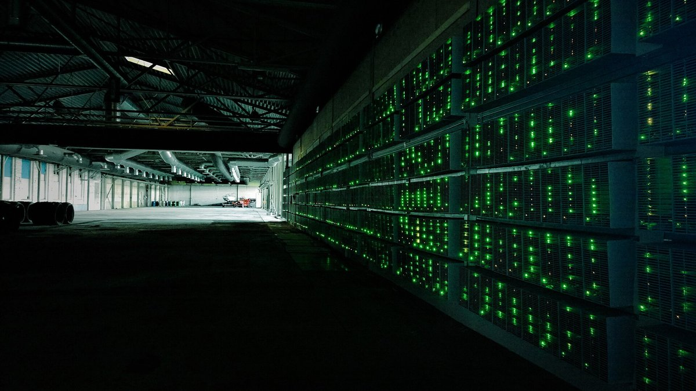

Perusahaan publik sudah jual 108.247 BTC sepanjang 2026, sementara Forward Industries tambah SOL dan Tron Inc. cetak laba Q3Public companies have sold 108,247 BTC so far in 2026, while Forward Industries adds SOL and Tron Inc. posts Q3 profit
Menurut Lookonchain, 14 perusahaan publik sudah menjual 108.247 BTC senilai sekitar US$8,08 miliar tahun ini, dipimpin penambang MARA dan Riot. Di sisi lain, perusahaan treasury Solana Forward Industries menambah sekitar 226.000 SOL, dan Tron Inc. melaporkan laba bersih kuartal III US$14,9 juta.According to Lookonchain, 14 public companies have sold 108,247 BTC worth about US$8.08 billion this year, led by miners MARA and Riot. Meanwhile, Solana treasury company Forward Industries added about 226,000 SOL, and Tron Inc. reported Q3 net income of US$14.9 million.

Poin utamaKey points
- Lookonchain (per 10 Nov): 14 perusahaan publik menjual total 108.247 BTC (~US$8,08 miliar). MARA 40.581 BTC (~US$3,03 miliar) dan Riot Platforms 20.264 BTC (~US$1,51 miliar), sekitar 56% dari total.
- Banyak penjual adalah penambang yang mengalihkan modal ke infrastruktur AI dan data center. Riot menjual BTC terutama untuk membiayai pengembangan data center.
- Forward Industries (NASDAQ: FWDI) menambah 226.396 SOL (+2,7%) pada 1 Okt-9 Nov 2026 menjadi 8.727.694 SOL, sekitar 1,5% suplai SOL beredar. Angka masih awal dan belum diaudit.
- Forward juga mendapat fasilitas kredit US$50 juta bertenor dua tahun (SOFR + 150 bps) yang dijamin SOL, dengan SOL jaminan tetap di-stake.
- Tron Inc. (Nasdaq: TRON) melaporkan laba bersih kuartal III US$14,9 juta (naik ~22%) dan laba sembilan bulan US$39,4 juta (naik ~203%). Investasi aset digitalnya US$257,8 juta per 30 September.
- Lookonchain (as of 10 Nov): 14 public companies sold a total of 108,247 BTC (~US$8.08 billion). MARA 40,581 BTC (~US$3.03 billion) and Riot Platforms 20,264 BTC (~US$1.51 billion), about 56% of the total.
- Many of the sellers are miners shifting capital to AI and data center infrastructure. Riot sold BTC mainly to fund data center development.
- Forward Industries (NASDAQ: FWDI) added 226,396 SOL (+2.7%) from 1 Oct to 9 Nov 2026, reaching 8,727,694 SOL, about 1.5% of circulating SOL supply. The figures are preliminary and unaudited.
- Forward also secured a two-year US$50 million credit facility (SOFR + 150 bps) secured by SOL, with the pledged SOL remaining staked.
- Tron Inc. (Nasdaq: TRON) reported Q3 net income of US$14.9 million (up ~22%) and nine-month net income of US$39.4 million (up ~203%). Its digital asset investments stood at US$257.8 million as of 30 September.
Perusahaan analitik blockchain Lookonchain mencatat 14 perusahaan publik telah menjual total 108.247 BTC, senilai sekitar US$8,08 miliar, sepanjang 2026 hingga 10 November, menurut crypto.news. Penambang MARA Holdings berada di urutan teratas dengan 40.581 BTC (sekitar US$3,03 miliar), diikuti Riot Platforms dengan 20.264 BTC (sekitar US$1,51 miliar) dan Bitdeer Technologies dengan 10.553 BTC (sekitar US$787 juta). MARA dan Riot bersama-sama menyumbang sekitar 56% dari total.
Daftar itu didominasi penambang, antara lain Cango, CleanSpark, Core Scientific, Hut 8, dan HIVE Digital. Menurut crypto.news, penjualan ini terjadi saat banyak penambang publik belanja besar untuk infrastruktur AI dan data center. Riot menjual 20.264 BTC dalam sembilan bulan pertama 2026, menghasilkan sekitar US$1,5 miliar, terutama untuk membiayai pengembangan data center. Penjualan MARA, termasuk 13.597 BTC setelah September untuk melunasi pinjaman berjaminan bitcoin US$750 juta, sudah dibahas COIN BRO sebelumnya.
Di sisi lain, Forward Industries (NASDAQ: FWDI), perusahaan treasury yang fokus pada Solana, melaporkan pada 10 November bahwa kepemilikan SOL dan setara SOL-nya naik 226.396 SOL atau 2,7% dari 30 September hingga 9 November 2026, menjadi 8.727.694 SOL, sekitar 1,5% dari suplai SOL yang beredar. Biaya rata-rata SOL tambahan itu US$75 per SOL. SOL per saham (fully diluted) naik 2,3% menjadi 0,0824.
Forward juga mendapat fasilitas kredit US$50 juta bertenor dua tahun dengan bunga SOFR + 150 basis poin dari sebuah bank nasional AS yang diasuransikan FDIC. Fasilitas itu dijamin SOL, dan SOL yang dijaminkan tetap di-stake. Perusahaan juga berkomitmen hingga US$50 juta ke USHP, produk indeks harga rumah AS yang ditokenisasi. Forward menegaskan angka-angka ini masih awal dan belum diaudit.
Sementara itu, Tron Inc. (Nasdaq: TRON), perusahaan publik pemegang token TRX terbesar, melaporkan laba bersih kuartal III 2026 sebesar US$14,9 juta, naik sekitar 22% dari US$12,2 juta setahun sebelumnya. Laba sembilan bulan pertama mencapai US$39,4 juta, naik sekitar 203%. Investasi aset digitalnya naik menjadi US$257,8 juta, dan pendapatan staking yang belum terealisasi untuk kuartal III sekitar US$3,18 juta. Laba seperti ini sebagian besar berasal dari kenaikan nilai aset digital yang belum terealisasi, sehingga bisa berbalik jika harga token turun.
Blockchain analytics firm Lookonchain counted 14 public companies that have sold a total of 108,247 BTC, worth about US$8.08 billion, during 2026 through 10 November, according to crypto.news. Miner MARA Holdings tops the list with 40,581 BTC (about US$3.03 billion), followed by Riot Platforms with 20,264 BTC (about US$1.51 billion) and Bitdeer Technologies with 10,553 BTC (about US$787 million). MARA and Riot together account for about 56% of the total.
The list is dominated by miners, including Cango, CleanSpark, Core Scientific, Hut 8 and HIVE Digital. According to crypto.news, the sales come as many public miners spend heavily on AI and data center infrastructure. Riot sold 20,264 BTC in the first nine months of 2026, raising about US$1.5 billion, mainly to fund data center development. MARA's sales, including 13,597 BTC after September to repay US$750 million of bitcoin-backed loans, have been covered by COIN BRO before.
On the other side, Forward Industries (NASDAQ: FWDI), a Solana-focused treasury company, reported on 10 November that its SOL and SOL-equivalent holdings rose by 226,396 SOL, or 2.7%, from 30 September to 9 November 2026, to 8,727,694 SOL, about 1.5% of circulating SOL supply. The average cost of the added SOL was US$75 per SOL. SOL per share (fully diluted) rose 2.3% to 0.0824.
Forward also secured a two-year US$50 million credit facility at SOFR + 150 basis points from an FDIC-insured US national bank. The facility is secured by SOL, and the pledged SOL remains staked. The company also committed up to US$50 million to USHP, a tokenized US home price index product. Forward stressed that these figures are preliminary and unaudited.
Meanwhile, Tron Inc. (Nasdaq: TRON), the public company with the largest TRX token holdings, reported Q3 2026 net income of US$14.9 million, up about 22% from US$12.2 million a year earlier. Net income for the first nine months reached US$39.4 million, up about 203%. Its digital asset investments rose to US$257.8 million, and unrealized staking income for Q3 was about US$3.18 million. Profits like these largely come from unrealized gains in the value of digital assets, so they can reverse if token prices fall.
Kenapa pentingWhy it matters
Perusahaan publik sering dianggap sebagai pembeli besar crypto. Data ini menunjukkan gambaran yang lebih campur: sebagian besar penjual BTC adalah penambang yang butuh dana untuk bisnis AI, sementara perusahaan treasury altcoin masih menambah kepemilikan.Public companies are often seen as big buyers of crypto. This data paints a more mixed picture: most BTC sellers are miners who need funds for AI businesses, while altcoin treasury companies are still adding to their holdings.
Narasi bahwa perusahaan publik terus memborong crypto tidak sepenuhnya akurat untuk 2026. Penambang kini cenderung menjual BTC untuk membiayai bisnis AI, jadi tekanan jual dari kelompok ini perlu dipantau. Ini interpretasi, bukan rekomendasi.The narrative that public companies keep buying up crypto is not entirely accurate for 2026. Miners now tend to sell BTC to fund AI businesses, so selling pressure from this group is worth watching. This is interpretation, not a recommendation.
Foto: fasilitas penambangan bitcoin (Marko Ahtisaari, CC BY 2.0, Wikimedia Commons). Foto ilustrasi, bukan fasilitas perusahaan yang disebut.Photo: bitcoin mining facility (Marko Ahtisaari, CC BY 2.0, Wikimedia Commons). Illustrative photo, not a facility of the companies named.
SumberSources
- crypto.news: Public companies have sold $8.08 billion in Bitcoin in 2026: Lookonchain
- CoinDesk: Bitcoin miner MARA sold 13,597 BTC for $1.1 billion in six weeks
- Forward Industries (GlobeNewswire): Grows SOL Holdings to approximately 8.7 Million SOL
- Tron Inc. (GlobeNewswire): Reports Strong Third Quarter 2026 Financial Results
- SEC EDGAR: Tron Inc. Form 10-Q (Q3 2026)
Ikuti COIN BRO diFollow COIN BRO on Telegram
Dapatkan berita seperti ini lebih cepat di channel kami. Gratis.Get news like this faster on our channel. Free.
Bukan saran finansial. Artikel ini adalah informasi dan edukasi, bukan ajakan membeli atau menjual aset apa pun. Aset kripto berisiko tinggi. Fakta mengikuti sumber yang tercantum; bagian berlabel interpretasi adalah pendapat, bukan fakta. Menemukan kesalahan? Lihat kebijakan koreksi.Not financial advice. This article is information and education, not a solicitation to buy or sell any asset. Crypto assets are high risk. Facts follow the listed sources; sections labeled interpretation are opinion, not fact. Found an error? See our corrections policy.